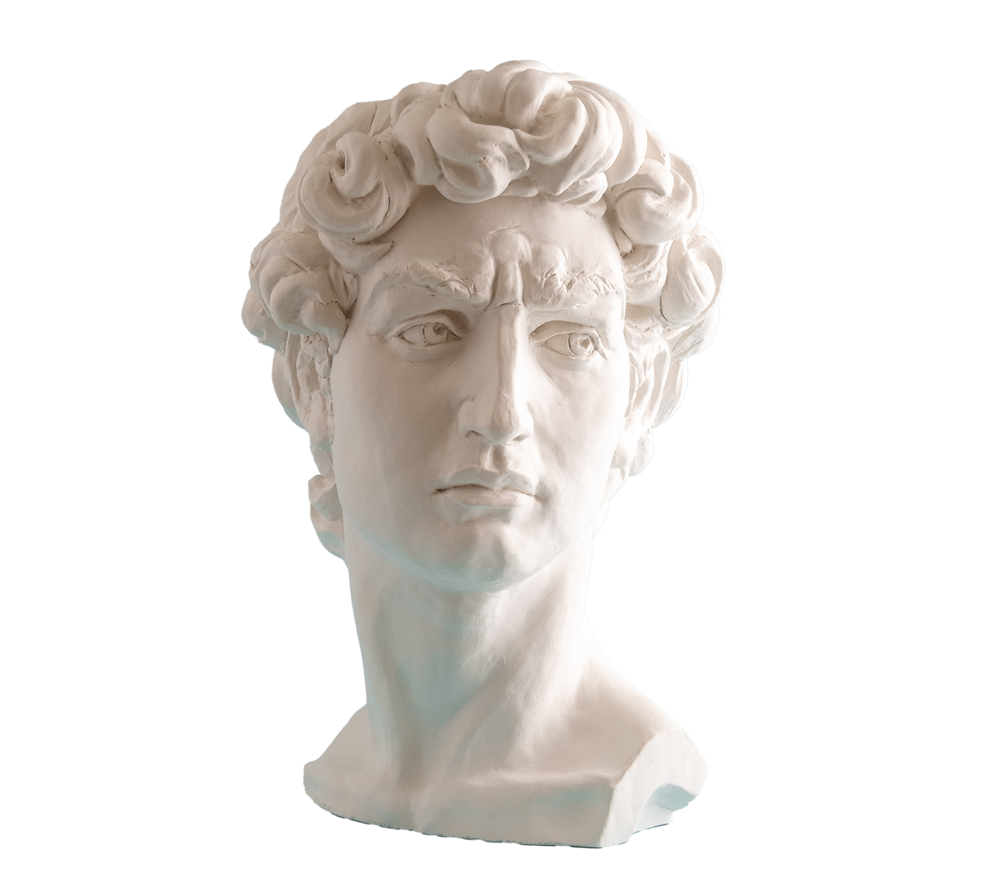

According to the Cognitive Bias Codex, created by John Manoogian III and Buster Benson, there are approximately 180 cognitive biases on a continually evolving list. This includes four dimensions, each dedicated to a specific group of cognitive biases (you can also see Appendix for a full list to-date):
